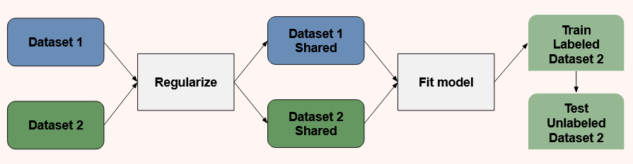

Domain Adaptation#
When to use Domain Adaptation#
Before determining the types of TL approaches that can and should be used for domain adaptation specifically, which situations transferring skills should be used and should not be used needs to be assessed.
DA should not be used if the source and target domains are not related. For a source and target domain to be related, an explicit or implicit relationship must exist between the feature spaces of the two domains (e.g., same study methodology at different locations, same study methods only altering stimuli, similar questions addressed in studies, etc.).
A brute-force transfer with domains that are not related to each other may be unsuccessful, and at worse, may hurt the learning performance in the target domain resulting in negative transfer.
Domain Adaptation Limitation#
The use of domain adaptation has an important limitation to be aware of. Unlike other fMRI analyses, domain adaptation must retain a spatial link of voxels across subjects.
Typically, fMRI data is analyzed across a subset of spatially relevant voxels (i.e., whole brain or a region of interest) after subject scans are similarly oriented to a standardized space, commonly MNI as used in the study below, which allows every subject’s brain to be defined within the same boundaries from a set origin. While activity may commonly occur in concentrated brain space, subject brains are not a 1:1 link of voxel activation, meaning that while fear may activate the insula of both subjects, insula voxel A of subject 001 may not activate identically to insula voxel A of subject 002. Voxel activity is typically assessed across a subset of spatially relevant voxels because brains are similar but not identical.
Domain adaptation is unable to follow this rationale as voxels are individually weighted based on their contribution to the classification and identifies voxels that correlate with a label across all participants and therefore some voxels will be regressed out during training. The need for voxels to be 1:1 linked across subjects may impact the results as if a feature is unique to the target domain, it will be difficult to identify it as the source domain considers one dimension while the target domain considers both dimensions.
While this limitation should be thoughtfully considered, domain adaptation remains a considerable step forward in fMRI analysis and the conclusions that can be drawn from the data. Additionally, if voxel to voxel correspondence is given up in domain adaptation, localization of function is also abandoned as the voxel space is.
CoIR#
Traditional domain adaptation considers each dataset to be a different domain. This is beneficial and widely used in computer vision and natural language processing, however brain activity presents a particular challenge as participants can elicit different patterns of activity for the same cognitive process.
In order to account for this, the current guide uses the Covariate Independence Regularization (CoIR) framework in which each subject is considered a unique learning task and extracts subject-specific features. Treating each dataset as a different domain as well as each subject as a different domain allows for a more robust model with each unique experiment-subject combination as a unique domain.

Fig. 3 - In CoIR, two datasets, or domains, are input into the algorithm which are regularized to remove idiosyncratic signal and noise fit a single model across the datasets, not prioritizing one dataset over another. The regularization and model fitting are one step and simply visualized here separately for discussion. The model then classifies the dataset 2 data, training on the labeled data, and testing on the unlabeled data.